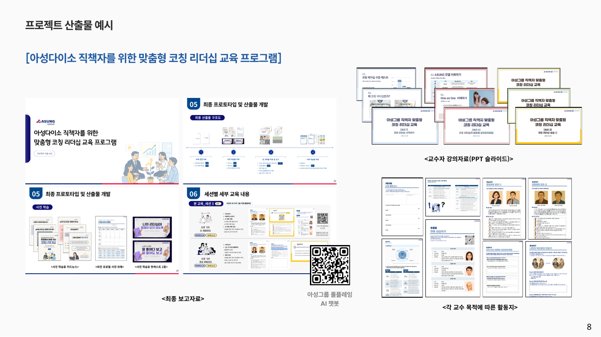

01 / LEADERSHIP DEVELOPMENT
아성다이소 직책자 맞춤형
코칭 리더십 프로그램
구성원 성장 지원과 성과관리 면담 역량을 높이는 교육을 설계하고, 현업 적용까지 프로젝트를 총괄했습니다.

LEARN · PRACTICE · APPLY조직의 목표와 구성원의 업무 맥락을 함께 읽고,
배움이 실제 행동으로 이어지는 경험을 설계합니다.
교육공학 전공 · HRDer
진단부터 설계, 운영과 개선까지. 서로 다른 조직의 과제를 구성원 성장 경험으로 연결했습니다.
구성원 성장 지원과 성과관리 면담 역량을 높이는 교육을 설계하고, 현업 적용까지 프로젝트를 총괄했습니다.

LEARN · PRACTICE · APPLY행동기준 진단 31개 문항과 학교별 결과 시각화, 연수 추천 흐름을 기획하고 사용성을 검증했습니다.
프로젝트 자세히 보기 ↗워크숍, 1:1 코칭, 자료 QA와 현장 모니터링을 연결해 사내 전문가의 강의 품질을 지원했습니다.
프로젝트 자세히 보기 ↗교원 2,200명 대상 연수의 인력 배치와 강사 인력풀, 인센티브 운영 방안을 지원했습니다.
프로젝트 자세히 보기 ↗CIPP 평가모형과 이해관계자 FGI를 통해 성과관리 지표와 매뉴얼 개발에 참여했습니다.
프로젝트 자세히 보기 ↗농어촌 직업계고의 AI·디지털 교육 전환을 지원하고 정량·정성 데이터를 분석했습니다.
프로젝트 자세히 보기 ↗11개 교육 프로그램 운영 데이터를 관리하고 관리자·교수자·학습자용 LMS 개발을 지원했습니다.
프로젝트 자세히 보기 ↗참여율, 실습 결과, 학습자 피드백과 현업 적용 사례를 함께 살피고 다음 운영의 콘텐츠와 방식을 개선합니다.
조직 목표, 학습자의 역할과 업무 환경을 분석해 교육이 해결할 과제를 구체화합니다.
실제 사례와 연습, 피드백을 연결하고 운영자가 활용할 자료와 도구까지 만듭니다.
정량·정성 데이터를 함께 읽고, 구성원의 적용을 돕는 후속 지원으로 배움을 이어갑니다.
교육공학 연구와 프로젝트 경험을 오가며 데이터 기반 설계와 효과적인 학습 지원을 탐구합니다.
사람과 조직의 성장을 잇는 기획자, 박가은입니다.
교육학과 교육공학을 공부하며 학습 경험이 실제 역량과 업무 변화로 이어지는 방법을 고민해 왔습니다. 기업·공공기관·대학·글로벌 기관과 협업하며 요구 분석, 프로그램 개발, 운영, 성과 분석을 경험했습니다. AI 기반 교육과 데이터 활용을 통해 더 나은 성장 환경을 만드는 데 관심이 있습니다.
졸업 예정 · 기초학문 후속세대 장학생
AI 기반 교육·역량개발 프로젝트 수행
전기 우등 졸업 · 중등 교육학 2급 교원자격증
ACTFL
지역대학 학생을 위한 취업 정보 콘텐츠 기획, 출연자 섭외와 채널 방향 설정